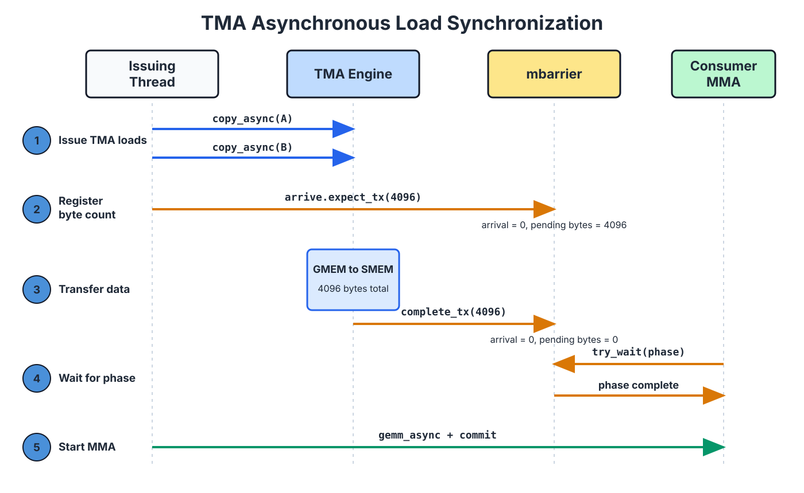

Async Data Movement: TMA#
Overview
TMA asynchronously moves tiles between global memory and shared memory. One thread in a warp issues the operation; hardware performs the remaining address calculation and data transfer.
A tensor map descriptor describes the global tensor, including its shape, strides, tile shape, and swizzle mode. The TMA instruction supplies the current tile coordinates and shared-memory address. On a load, TMA can apply the swizzle while writing shared memory, so the tile arrives in the layout expected by the later MMA.
TMA loads and stores use different completion mechanisms. A load uses an
mbarrierto track the number of transferred bytes; a store uses a commit group and wait group to determine when its source buffer can be reused.
Start with the most common situation in a GEMM mainloop. While the Tensor Core computes tile \(k\), the next A and B tiles must reach shared memory before the current computation finishes. If the data arrives late, the Tensor Core has to wait. The pipeline then develops a bubble, meaning a period in which the compute unit sits idle waiting for data.
One way to move the tiles is to have several threads cooperate: each thread computes its global-memory and shared-memory addresses, then executes the corresponding load and store. The Tensor Memory Accelerator, or TMA, provides another path. One thread submits a tile copy, and a dedicated TMA engine performs the remaining address calculation and data transfer.
TMA can also apply a swizzle as it writes shared memory, allowing the tile to arrive in the physical layout required by the later MMA. The following interactive figure shows this path. The global tensor on the left contains 16x128 fp16 elements, and the blue rectangle selects an 8x64 tile. The right side shows how that tile is arranged after TMA writes it into shared memory. Each cell represents eight consecutive fp16 values, or 16 bytes. Toggle the swizzle mode to compare the linear and 128-byte swizzled layouts.
Hover over any source cell on the left to see its physical destination in shared memory.
How One Thread Describes an Entire Tile#
The thread that issues a TMA copy does not iterate over the elements in the tile. It only provides the hardware with two kinds of information.
The first is a tensor map descriptor. It records the global tensor’s element type, shape and strides in each dimension, the tile shape for one copy, and the swizzle mode to apply when writing shared memory. The same descriptor can usually be reused across many tile copies.
The second is specific to the current copy: the tile’s starting coordinates in the global tensor and its destination address in shared memory. A useful distinction is that the descriptor says “how is this tensor organized?”, while the instruction arguments say “where does this copy begin, and where should it land?”
The warp still follows the SIMT execution model when the TMA instruction is issued. Only the selected thread participates in that instruction; the other threads in the warp are masked off. This lasts only until the request has been submitted. The TMA engine then moves the data asynchronously, while the issuing warp and the other warps in the CTA may continue executing. They wait for completion only before they actually use the tile.
How TMA Writes a Swizzled Layout#
Return to the interactive figure above and first select None. Each row is then written to shared memory in its original order, so logical sector c remains physical sector c.
Now select 128B. Each row in the figure contains eight 16-byte sectors, exactly 128 bytes. In this simplified, aligned example, logical sector col in row row is written to:
physical_sector = col XOR row
The sectors from one logical column now land at different physical positions in different rows, making a cross-row access less likely to concentrate on the same shared-memory banks. The TMA engine applies this address transformation while writing the tile; the issuing thread does not calculate each swizzled address itself.
Swizzling changes the tile’s physical arrangement, not its logical contents. The TMA descriptor, the shared-memory tile layout, and the later MMA instruction must all describe the same physical arrangement (Data Layout and Its Notation). If TMA writes a 128-byte swizzle but MMA reads the data as a linear layout, the bytes have reached shared memory, but the Tensor Core will interpret them as the wrong matrix elements.
Using 3D TMA to Move Multiple Swizzle Atoms#
SWIZZLE_128B uses an 8 rows x 128 bytes repeating unit called a swizzle atom. Address remapping occurs only within an atom, so the innermost contiguous dimension of a TMA box cannot exceed 128 bytes. For fp16, that space holds exactly 64 elements.
Now consider a 16x128 fp16 matrix slice. Each row contains 128 fp16 values, or 256 bytes, so the row cannot directly serve as one row of a 128-byte swizzle atom. To use SWIZZLE_128B, split each row into two groups of 64 fp16 values:
group 0: columns 0-63 = 128 bytes
group 1: columns 64-127 = 128 bytes
For a column coordinate j within the slice, define:
group = j // 64
col = j % 64
global[row, j] = global3[group, row, col]
The same data now has a three-dimensional (group=2, row=16, col=64) view. This reshape only changes how the tensor map interprets the coordinates; it does not move the data in global memory ahead of time. After adding the group dimension, the innermost col dimension contains 64 fp16 values and therefore satisfies the 128-byte limit.
The next interactive figure draws this process. The left side is a complete 16x256 global matrix. Each cell represents one 16-byte sector, or eight fp16 values. The blue region selects one 16x128 slice. A single 3D TMA copy writes its two groups into g0 and g1 on the right.
Each group has 16 rows, while one swizzle atom has only eight. Both g0 and g1 therefore contain two atoms: rows 0-7 form the first atom, and rows 8-15 form the second. The complete slice contains four atoms. With 128B enabled, TMA rearranges sectors inside each atom according to physical_sector = logical_sector XOR (row % 8).
Toggle Col offset to select the first or second 128 columns of the original matrix. Hover over any cell in the blue region to see where its 16-byte sector lands in shared memory.
The 128-Byte Swizzle Grouping Requirement#
Why split a 256-byte row into two 128-byte groups? In addition to satisfying the TMA box width limit, the grouping changes which shared-memory banks a cross-row access reaches.
Consider a 16x16 grid of sectors. Each sector is 16 bytes, so one row occupies 256 bytes. Suppose we read the same sector column from eight consecutive rows, producing eight parallel 16-byte accesses.
One 16-byte access spans four adjacent shared-memory banks. To make the pattern easier to inspect, the figure below groups the 32 banks into eight bank sectors, S0 through S7, with four adjacent banks in each sector. If two accesses land in the same bank sector, they contend for the same group of banks.
First split each row into two 128-byte groups. For a column col in the complete grid, col // 8 selects the left or right group and local_col = col % 8 gives the column inside that group. For rows 0-7, the swizzled bank sector is:
bank_sector = local_col XOR (row % 8)
The eight rows produce eight different results, so these accesses can proceed in parallel.
If the row remains ungrouped with a 256-byte stride, moving to the next row crosses two 128-byte units. The value used by the XOR consequently advances by two on each row:
bank_sector = local_col XOR ((2*row + col // 8) % 8)
This expression produces only four distinct results. Each bank sector is accessed twice, creating a 2-way conflict. The ungrouped state is included only for comparison; it is not a legal SWIZZLE_128B TMA box.
The following interactive figure compares the two cases. Select a Column and eight consecutive rows in the original grid on the left. On the right, cells with black outlines show where those accesses land in the swizzled layout. With Tiling set to Yes, each row is first split into 128-byte groups g0 and g1. With Tiling set to No, the figure retains the 256-byte row stride as a comparison. The S0-S7 summary at the bottom shows which bank sectors the accesses use. Changing dtype only changes how many elements fit in a sector; it does not change the address mapping.
Toggle tiling, then select a column and a range of eight rows to compare bank-sector use with and without grouping.
When the tile dimensions and target access pattern allow it, choose the widest swizzle the tile can hold so that accesses spread across more banks. An N-byte swizzle atom requires a contiguous dimension of at least N bytes. If the tile cannot hold a 128-byte atom, use a 64-byte or 32-byte swizzle instead (Data Layout and Its Notation).
How to Wait for a TMA Load#
A TMA load is asynchronous. Issuing the instruction only starts the transfer; the consumer cannot read the destination tile yet. TMA uses an mbarrier for this handoff. The producer tells the barrier how many bytes to expect during the current phase, the TMA engine updates the barrier after writing those bytes, and the consumer waits for that barrier phase to complete.
One phase of an mbarrier tracks both an arrival count and a pending transaction-byte count. The phase completes only after both reach zero.
Consider a concrete example. Suppose a kernel loads two operand tiles, A and B, each containing 2048 bytes, and associates both copies with the same mbarrier. The phase must wait for:
2048 + 2048 = 4096 bytes
Assume the barrier was initialized with an expected arrival count of 1. The issuing thread associates both TMA loads with the barrier and executes mbarrier.arrive.expect_tx(4096). This performs the thread’s one arrival and sets the pending byte count to 4096:
after expect_tx: arrival count = 0, pending bytes = 4096
after TMA completes: arrival count = 0, pending bytes = 0
As each TMA copy finishes, the engine applies a complete-tx update that subtracts the corresponding byte count. The consumer waits with try_wait(phase). Only after the two copies have completed all 4096 bytes does the pending count reach zero, allowing the consumer to read the A and B tiles safely. The next figure shows this handoff in time order.

How to Wait for a TMA Store#
A TMA store moves data in the opposite direction, from shared memory to global memory. The synchronization question changes with that direction: a load consumer needs to know when the destination tile is ready to read, whereas a store producer needs to know when the source buffer is safe to reuse.
For example, suppose the epilogue has written an output tile into Dsmem and then starts a TMA store to write it back to D. The kernel cannot immediately overwrite Dsmem, because the TMA engine might then read data from the next iteration. The store path uses a bulk async group:
issue one or more TMA stores
cp.async.bulk.commit_group
cp.async.bulk.wait_group 0
reuse Dsmem
commit_group combines the uncommitted stores issued so far into one bulk async group. wait_group 0 waits until all previously committed groups have completed. Only after it returns can Dsmem be reused safely.
The two paths can therefore be distinguished as follows:
TMA load: consumer waits for data through an mbarrier with byte tracking
TMA store: producer waits for source reuse through a commit group and wait group
Putting TMA into a Pipeline#
TMA reduces the number of copy instructions, but its larger benefit is the ability to overlap data movement with computation. With two shared-memory stages, for example:
time t: MMA reads stage 0 TMA fills stage 1
time t+1: MMA reads stage 1 TMA fills stage 0
While the Tensor Core reads stage 0, TMA writes the next tile into stage 1. The two stages exchange roles on the next iteration. Before MMA reads a stage, it waits for the corresponding TMA load to finish. Before TMA overwrites a stage, the kernel also confirms that the previous computation no longer uses its data.
TMA performs the asynchronous transfer, and the barrier hands each stage from producer to consumer. Together, they allow the time spent waiting for future data to be hidden behind computation on the current tile.